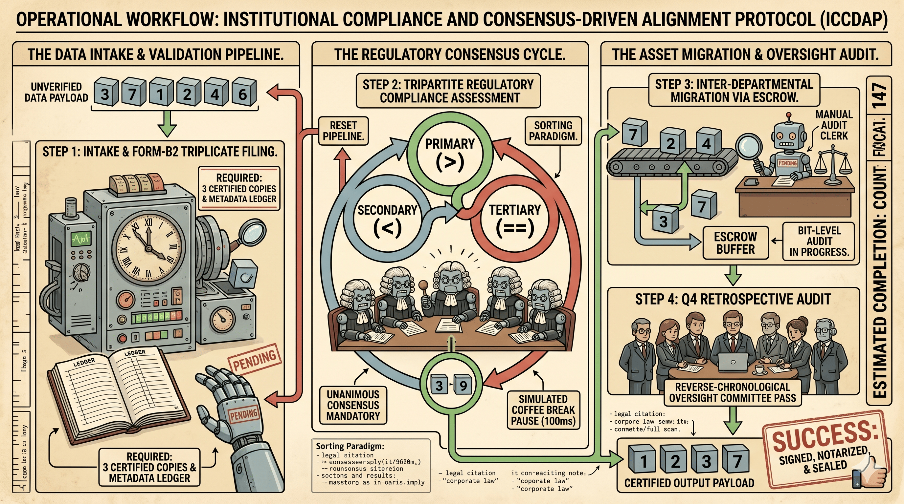

ICCDAP (STALL AND SORT)

[Stall and Sort intro placeholder...]
ICCDAP (STALL AND SORT)
The architectural framework designated as the Institutional Compliance and Consensus-Driven Alignment Protocol (ICCDAP)—alternatively classified in commercial sectors as Bureaucracy Sort—is an enterprise-grade data-rationalization mechanism engineered to guarantee absolute validation integrity at the expense of temporal efficiency. Traditional algorithmic structures, while computationally expeditious, routinely sacrifice cross-functional oversight by executing localized, un-audited data migrations within isolated memory sectors. ICCDAP mitigates this risk by establishing a multi-layered, committee-driven processing environment wherein no individual data packet may alter its spatial coordinate or index alignment without achieving formal, multi-departmental clearance and executing a documented validation cycle.
Operationally, the protocol translates traditional binary array iterations into consecutive "Fiscal Quarters" of systemic review. Prior to the execution of a singular comparative evaluation, the system initiates an absolute operational intake process, generating standardized metadata ledgers that document the exact structural parameters of the target elements. The logical assessment of whether a preceding asset maintains a value superior to its subsequent neighbor is then subjected to a rigorous tripartite checking sequence across distinct processing threads. Should the elements be found in non-compliance with the desired sorted paradigm, an inter-departmental asset transfer is initiated, routing the data through a localized escrow buffer where a background thread validates the data down to the bit level before final, authorized re-allocation is granted.
To secure absolute data finality and mitigate the systemic threat of unrecorded data anomalies, the protocol strictly prohibits the immediate termination of the processing pipeline upon the initial realization of a sorted state. Instead, the detection of zero active asset re-allocations within a given fiscal quarter automatically triggers a comprehensive retrospective oversight audit. This process mandates a full-scale, reverse-chronological counter-scan of the entire dataset by an independent, un-associated logic matrix to formally verify that previous compliance committees did not introduce errors. Only when this secondary, retrospective governing body signs and notarizes the physical state of the array is the data payload formally released to the production environment, establishing a paradigm where absolute consensus dictates finality.